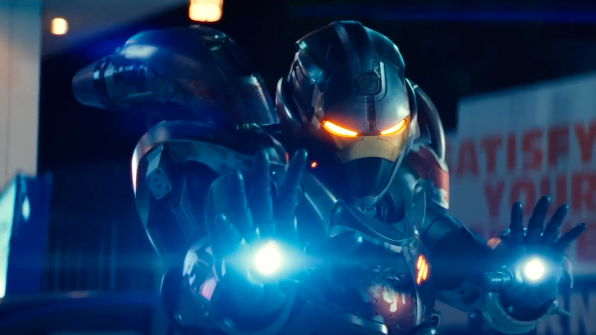

About IronHeart
Ironheart, also known as RiRi Williams, is a Black girl in stem. RiRi Williams is an MIT student and genius inventor from Chicago who created a suit of armor like her idol Tony Stark, also known as Ironman. Ironheart televison series premier on Disney Plus in June 2025.
RiRi in her IronHeart suit
Ironheart's Characterists
- Inventor
- Invovator
- Programmer